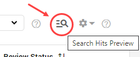
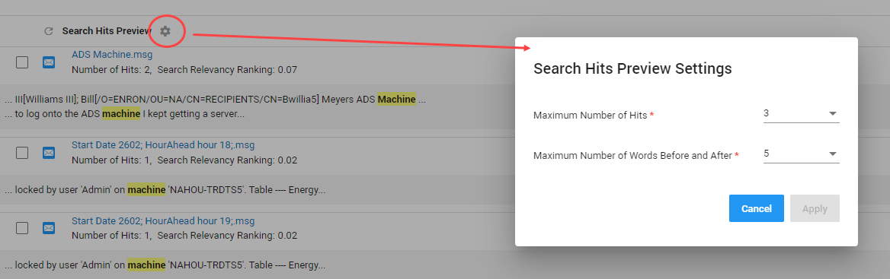

Note: The Access document text permission must be assigned to a user for access to Search Hits Preview.
Use Search Hits Preview to save time during review. Preview the context of a hit, without opening the file, to decide whether it might be relevant.
|
|
Note: The Access document text permission must be assigned to a user for access to Search Hits Preview. |
From the Document List overview, select Search Hits Preview.

Adjust the Search Hits Preview. Select the Search Hits Preview Settings icon:
Change the following:
Adjust the Maximum Number of Hits shown for one file.
For instance, if the Maximum Number of Hits is set to 3, then the file might contain more than 3 hits, but no more than 3 hits will be displayed in preview.
Adjust the Maximum Number of Words Before and After a hit.
For instance, if the Maximum Number of Words is set to 5, then no more than 5 words preceding and 5 words following the hit will be displayed in preview.
